전기공사산업기사 (2004-05-23 기출문제)
1과목: 전기응용
1. 반사율 ρ , 투과율 τ , 반지름 r의 완전 확산성 구형 글로브의 중심에 광도 I의 점 광원을 켰을 때 광속 발산도는?
- τI/r2(1-ρ)
- ρI/r2(1-τ)
- 4πρI/r2(1-τ)
- ρπI/r2(1-ρ)
(정답률: 70%)
2. 반직접 조명에서 하향광속의 배광은 몇[%]인가?
- 0 - 30
- 30 - 60
- 60 - 90
- 90 - 100
(정답률: 65%)
3. 1 [B.T.U]는 몇 [Kcal]인가?
- 0.252
- 0.035
- 4.18
- 3.968
(정답률: 80%)
4. 유도가열은 어느 용도에 가장 적합한가?
- 목재의 접착
- 금속의 용접
- 금속의 열처리
- 비닐의 접착
(정답률: 73%)
5. 전자 빔 가열의 특징이 아닌 것은?
- 고융점 재료 및 금속박 재료의 용접이 쉽다.
- 진공 중에서 가열이 가능하다.
- 에너지의 밀도나 분포를 자유로이 조절할 수 있다.
- 신속하고 효율이 좋으며 표면 가열이 가능하다.
(정답률: 74%)
6. 무인 엘리베이터의 자동제어는?
- 정치제어
- 추종제어
- 프로그래밍제어
- 비율제어
(정답률: 81%)
7.
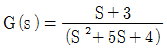
의 특성근은?- 0
- -3
- 4, 1, 3
- -1, -4
(정답률: 70%)
8. 총 중량이 30[t]이고 전동기 4대를 가진 전동차가 20[%]의 직선궤도를 올라가고 있다. 지금 속도 30[km/h], 가속도 1[km/h/s]라면 각 전동기의 출력[kw]은 약 얼마인가? (단, 열차저항은 6[Kg/t], 기어장치효율은 0.95로 한다)
- 25
- 37
- 43
- 51
(정답률: 60%)
9. 부하에 관계없이 회전수가 일정하며, 몇단계로 회전수를 바꾸는 전동기로서 직류분권 및 타여자 전동기, 농형 유도전동기는 어떤 속도전동기에 속하는가?
- 정속도전동기
- 변속도전동기
- 다단속도전동기
- 가감속도전동기
(정답률: 46%)
10. 유도로에서 주강 500[㎏] 을 통전 30분만에 158700[㎉]의 열량을 가하여 용해시켰다. 이때 소요전력은 몇[㎾]인가? (단, 유도로의 효율은 75 % 로 한다.)
- 119
- 158
- 317
- 492
(정답률: 44%)
11. 역저지 3극 다이리스터의 통칭은?
- SSS
- SCS
- LASCR
- TRIAC
(정답률: 29%)
12. 제너다이오드에 관한 설명중 틀린 것은?
- 정전압 소자이다.
- 인가되는 전압의 크기에 따라 전류방향이 달라진다.
- 정.부의 온도계수를 가진다.
- 과전류 보호용으로 사용된다.
(정답률: 60%)
13. 직류 급전방식에 대한 설명중 맞지 않는 것은?
- 전압의 불평형에 따른 문제가 없다.
- 통신선에 대한 유도장애가 거의없다.
- 교류급전 방식에 비하여 변전소의 설치간격이 짧다.
- 주파수 변동에 따른 속도의 변화가 많아 별도의 제어장치가 필요하다.
(정답률: 68%)
14. 전반 조명의 특색으로 맞는 것은?
- 휘도가 낮다.
- 작업위치가 바뀌어도 등기구의 위치를 옮기지 않아도 된다.
- 충분한 조도를 얻을 수 있다.
- 효율이 좋다.
(정답률: 64%)
15. 발열체의 구비조건이다. 이중에서 틀린 것은?
- 저항의 온도계수가 양(+)수로서 작을 것
- 압연성이 풍부하고 가공이 용이할것
- 내식성이 작을 것
- 내열성이 클 것
(정답률: 67%)
16. 2차 전지는 어떤 것인가?
- 자동차용 전지
- 공기 전지
- 수은 전지
- 리듐 전지
(정답률: 72%)
17. 제품 제조과정이 다음과 같은 화학 반응식을 갖는 가열방식은?
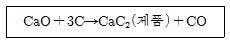
- 직접 저항가열
- 유도가열
- 유전가열
- 간접 저항가열
(정답률: 68%)
18. 일반적으로 태양의 색온도는 몇 [K]인가?
- 6500
- 7500
- 8500
- 9500
(정답률: 42%)
19. 형광등의 초특성은 어느때 측정한 값인가?
- 제조직후
- 점등50시간후
- 점등100시간후
- 점등200시간후
(정답률: 73%)
20. 다음 중 전기철도의 주전동기의 특성이 아닌 것은?
- 병렬운전이 가능할 것
- 전원전압의 변화에 대한 영향이 적을 것
- 속도가 상승함에 따라 토크가 클 것
- 오름 구배에서 토크의 저하가 적을 것
(정답률: 55%)
2과목: 전력공학
21. 송전선로에서 매설지선의 설치 목적은?
- 코로나 전압의 감소
- 뇌해의 방지
- 기계적 강도의 증가
- 절연강도의 증가
(정답률: 42%)
22. 우리나라의 특고압 배전방식으로 가장 많이 사용되고 있는 것은?
- 단상2선식
- 3상3선식
- 3상4선식
- 2상4선식
(정답률: 6%)
23. 피뢰기의 구조에서 전·자기적인 충격으로부터 보호하는 구성 요소는?
- 쉴드링
- 특성 요소
- 직렬갭
- 소호 리액터
(정답률: 17%)
24. 송전선용 표준철탑 설계의 경우 일반적으로 가장 큰 하중은?
- 풍압
- 애자, 전선의 중량
- 빙설
- 전선의 인장강도
(정답률: 39%)
25. 단상2선식의 교류 배전선이 있다. 전선 한 줄의 저항은0.15Ω, 리액턴스는 0.25Ω이다. 부하는 무유도성으로 100V, 3kW일 때 급전점의 전압은 약 몇 V 인가?
- 100
- 110
- 120
- 130
(정답률: 29%)
26. 재폐로 차단기에 대한 설명으로 옳은 것은?
- 배전선로용은 고장구간을 고속 차단하여 제거한 후 다시 수동조작에 의해 배전이 되도록 설계된 것이다.
- 재폐로계전기와 함께 설치하여 계전기가 고장을 검출하여 이를 차단기에 통보, 차단하도록 된 것이다.
- 3상 재폐로 차단기는 1상의 차단이 가능하고 무전압 시간을 약 20∼30초로 정하여 재폐로하도록 되어있다.
- 송전선로의 고장구간을 고속 차단하고 재송전하는 조작을 자동적으로 시행하는 재폐로 차단장치를 장비한 자동차단기이다.
(정답률: 34%)
27. 전원이 양단에 있는 방사상 송전선로의 단락보호에 사용되는 계전기의 조합 방식은?
- 방향거리계전기와 과전압계전기의 조합
- 방향단락계전기와 과전류계전기의 조합
- 선택접지계전기와 과전류계전기의 조합
- 부족전류계전기와 과전압계전기의 조합
(정답률: 32%)
28. 전력계통의 전압 조정설비의 특징에 대한 설명 중 틀린 것은?
- 병렬콘덴서는 진상능력만을 가지며 병렬리액터는 진상능력이 없다.
- 동기조상기는 무효전력의 공급과 흡수가 모두 가능하여 진상 및 지상용량을 갖는다.
- 동기조상기는 조정의 단계가 불연속이나 직렬콘덴서 및 병렬리액터는 그것이 연속적이다.
- 병렬리액터는 장거리 초고압 송전선 또는 지중선 계통의 충전용량 보상용으로 주요 발·변전소에 설치 된다.
(정답률: 20%)
29. % 임피던스에 대한 설명 중 옳은 것은?
- 터빈발전기의 % 임피던스는 수차의 % 임피던스보다 적다.
- 전기기계의 % 임피던스가 크면 차단용량이 작아진다.
- % 임피던스는 % 리액턴스보다 작다.
- 직렬리액터는 % 임피던스를 적게 하는 작용이 있다.
(정답률: 30%)
30. 중성점 저항접지방식에서 1선 지락시의 영상전류를 Io라고 할 때 저항을 통하는 전류는 어떻게 표현되는가?
- 1/3Io
- √3Io
- 3Io
- 6Io
(정답률: 28%)
31. 동일한 2대의 단상변압기를 V결선하여 3상전력을 100kVA까지 배전할 수 있다면 똑같은 단상변압기 1대를 추가하여 △결선하게 되면 3상전력을 약 몇 kVA 까지 배전할 수 있겠는가?
- 57.7
- 70.5
- 141.4
- 173.2
(정답률: 31%)
32. 배전선로의 부하율이 F 일 때 손실계수 H 는?
- F 와 F2 의 합
- F 와 같은 값
- F 와 F2 의 중간 값
- F2 과 같은 값
(정답률: 27%)
33. 송전선로에 근접한 통신선에서 발생하는 유도장해에 관한 설명으로 옳지 않은 것은?
- 정전유도의 원인은 전력선의 영상전압에 의해 발생한다.
- 전자유도의 원인은 전력선의 영상전류에 의해 발생한다.
- 유도장해를 억제하기 위하여 송전선에 충분한 연가를 한다.
- 유도되는 전압은 통신선의 길이에 비례한다.
(정답률: 30%)
34. 그림과 같은 4단자 정수를 가진 2개의 회로가 직렬로 연결되어 있을 때 합성 4단자 정수는?
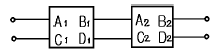
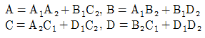
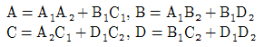
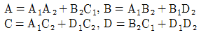
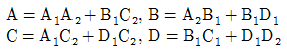
(정답률: 23%)
35. 일반적인 경우 그 값이 1 이상인 것은?
- 수용률
- 전압강하율
- 부하율
- 부등률
(정답률: 31%)
36. 낙차 350m, 회전수 600rpm인 수차를 325m의 낙차에서 사용할 때의 회전수는 약 몇 rpm 인가?
- 500
- 560
- 578
- 600
(정답률: 18%)
37. 뒤진 역률 80%, 1000kW의 3상 부하가 있다. 이것에 전력용 콘덴서를 설치하여 역률을 95%로 개선하는데 필요한 전력용콘덴서의 용량은 약 몇 kVA 가 되겠는가?
- 376
- 398
- 422
- 464
(정답률: 29%)
38. 송전선로에서 복도체를 사용하는 주된 이유는?
- 많은 전력을 보내기 위하여
- 코로나 발생을 억제하기 위하여
- 전력손실을 적게하기 위하여
- 선로정수를 평형시키기 위하여
(정답률: 42%)
39. 전력계통의 안정도의 종류에 속하지 않는 것은?
- 상태 안정도
- 정태 안정도
- 과도 안정도
- 동태 안정도
(정답률: 33%)
40. 고압 배전선로의 선간전압을 3300V에서 5700V로 승압하는 경우, 같은 전선으로 전력손실을 같게 한다면 약 몇 배의 전력을 공급할 수 있겠는가?
- 1.5
- 2
- 3
- 4
(정답률: 34%)
3과목: 전기기기
41. 동기 발전기에서 전기자 전류를 I,유기기전력과 전기자 전류와의 위상각을 θ 라하면 횡축 반작용을 하는 성분은?
- Ｉcot θ
- Ｉtan θ
- Ｉsin θ
- Ｉcos θ
(정답률: 42%)
42. 전동기에서 회전력이 작용하는 방향으로 맞는 것은?
- 인덕턴스가 증가하는 방향
- 자기저항이 증가하는 방향
- 시스템의 에너지가 증가하는 방향
- 전류가 증가하는 방향
(정답률: 16%)
43. 변압기의 백분률 리액턴스 강하가 저항강하의 3배라고 하면 정격전류에 있어서 전압 변동률이 0 이 될 앞선 역률의 크기는?
- 약 0.80
- 약 0.85
- 약 0.90
- 약 0.95
(정답률: 17%)
44. 부하에 관계없이 변압기에 흐르는 전류로서 자속만을 만드는 것은?
- 1차전류
- 철손전류
- 여자전류
- 자화전류
(정답률: 39%)
45. 가동 복권발전기의 내부 결선을 바꾸어 직권발전기로 사용하려면?
- 직권계자를 단락 시킨다
- 분권계자를 개방시킨다
- 직권계자를 개방시킨다
- 외분권 복권형으로 한다
(정답률: 32%)
46. 3상 수은정류기의 직류 부하전류(평균)에 100[A] 되는 1상 양극 전류 실효치[A]는?
- 100√3
- 100/3
- 100√3/π
- 100/√3
(정답률: 17%)
47. 일정전압으로 운전하는 직류전동기의 손실이 x+yI2으로 될때 어떤 전류에서 효율이 최대가 되는가? (단, x, y는 정수이다.)
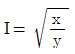
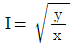
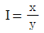
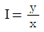
(정답률: 36%)
48. 회전자 입력 10[Kw], 슬립4[%]인 3상 유도전동기의 2차동손[Kw]은?
- 약 0.4
- 약 0.3
- 약 0.5
- 약 0.6
(정답률: 20%)
49. 3300[V], 60[Hz]의 Y결선의 3상 유도전동기가 있다. 철손을 1020[W]라 하면 1상의 여자콘덕턴스는?
- 56.1× 10-5[℧]
- 18.7× 10-5[℧]
- 9.37× 10-5[℧]
- 6.12× 10-5[℧]
(정답률: 20%)
50. 다음은 유도발전기의 원리를 설명한 것이다. 틀린것은?
- 회전자권선은 유도전동기와 반대로 회전자속을 자른다.
- 유도기전력 및 전류의 방향은 유도전동기와 반대로 된다.
- 회전자전류와 회전자속의 토크의 방향은 회전자의 회전방향과 같게 된다.
- 고정자의 부하전류의 방향은 전동기의 경우와 반대이다.
(정답률: 35%)
51. 직류기의 양호한 정류를 얻는 조건이 아닌 것은?
- 정류 주기를 크게 할것
- 정류 코일의 인덕턴스를 작게 할것
- 리액턴스 전압을 작게 할것
- 브러시 접촉 저항을 작게 할것
(정답률: 24%)
52. 1차(고정자측) 1상당 저항이 r1[Ω], 리액턴스 x1[Ω]이고 1차에 환산한 2차측(회전자측) 1상당 저항은 r2'[Ω], 리액턴스 x2'[Ω ]가 되는 권선형 유도 전동기가 있다. 2차 회로는 Y로 접속되어 있으며, 비례추이를 이용하여 최대 토크로서 기동시킬려고 하면 2차에 1상당 얼마의 외부저항(1차에 환산한 값)을 연결하면 되는가?
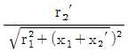
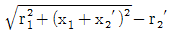
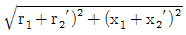
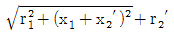
(정답률: 19%)
53. 단상 변압기가 있다. 전부하에서 2차 전압은 115[V]이고, 전압 변동률은 2[%]이다. 1차 단자 전압은? (단, 1차 2차 권선비는 20 : 1이다)
- 2346 [V]
- 2326 [V]
- 2356 [V]
- 2336 [V]
(정답률: 31%)
54. 단상 직권 정류자 전동기의 회전 속도를 높이는 이유는?
- 리액턴스 강하를 크게 한다.
- 전기자에 유도되는 역기전력을 적게 한다.
- 역률을 개선한다.
- 토크를 증가시킨다.
(정답률: 22%)
55. 직류 전동기를 전 부하 전류 이하 동일 전류에서 운전할 경우 회전수가 큰 순서대로 나열하면?
- 직권, 화동(가동) 복권, 분권, 차동 복권
- 직권, 차동 복권, 분권, 화동(가동) 복권
- 차동 복권, 분권, 화동(가동) 복권, 직권
- 화동(가동) 복권, 분권, 차동 복권, 직권
(정답률: 25%)
56. 변압기의 결선중에서 6상측의 부하가 수은정류기일때 주로 사용되는 결선은?
- 포오크 결선(fork connection)
- 환상 결선(ring connection)
- 2중3각 결선(double star connection)
- 대각 결선(diagonal connection)
(정답률: 20%)
57. 동기 발전기의 운전중 갑자기 단자 부근에서 단락이 일어났다고 하면 단락전류는?
- 계속 증가한다
- 발전기가 즉시 정지한다
- 일정한 큰 전류가 흐른다
- 처음은 큰 전류가 흐르나 점차로 감소한다
(정답률: 30%)
58. 차단기의 트립 방식이 아닌 것은?
- 전압 트립 방식
- 과전류 트립 방식
- 부족 전압 트립 방식
- 인덕터 트립 방식
(정답률: 23%)
59. 동기 발전기 단자부근에서 단락이 일어났다고 하면 단락 전류는?
- 서서히 증가한다.
- 처음은 크나 점차로 감소한다.
- 처음부터 일정한 큰 전류가 흐른다.
- 발전기는 즉시 정지한다.
(정답률: 24%)
60. 브러시 호울더(brush holder)는 브러시를 정류자면의 적당한 위치에서 스프링에 의하여 항상 일정한 압력으로 정류자 면에 접촉하여야 한다. 가장 적당한 압력[kg/cm2]은?
- 1∼ 2 [kg/cm2]
- 0.5 ∼ 1[kg/cm2]
- 0.15 ∼ 0.25 [kg/cm2]
- 0.01 ∼ 0.15 [kg/cm2]
(정답률: 37%)
4과목: 회로이론
61. 가정용 전원의 전압이 기본파가 100[V]이고 제7고조파가 기본파의 4[%], 제11고조파가 기본파의 3[%]이었다면 이전원의 일그러짐 률은 몇 [%]인가?
- 11
- 10
- 7
- 5
(정답률: 23%)
62. 대칭좌표법에 의하여 3상 회로에 대한 해석중 잘못된 것은?
- △결선이든 Y결선이든 세 선전류의 합은 영(零)이면 영상분도 영(零)이다.
- 선간전압의 합이 영(零)이면 그 영상분은 항상 영(零)이다.
- 선간전압이 평형이고 상순이 a-b-c이면 Y결선에서 상전압의 역상분은 영(零)이 아니다.
- Y결선중 성접지시에 중성선 정상분의 선전류에 대하여서 ∞ 의 임피이던스를 나타낸다.
(정답률: 18%)
63. 3상 전력을 측정하는데 두 전력계 중에서 하나가 0이었다 이때의 역률은 어떻게 되는가?
- 0.5
- 0.8
- 0.6
- 0.4
(정답률: 21%)
64. 임피던스 Z(s)가 Z(s) =S+20/S2+2RLs+1로 주어지는 2단자 회로에 직류전류원 15[A]를 가할 때 이 회로의 단자전압[V]은?
- 200
- 300
- 400
- 600
(정답률: 14%)
65. 그림과 같은 이상변압기에 대하여 성립되지 아니하는 관계식은? (단, n1, n2는 1차 및 2차 코일의 권수) ( n은 권수비 ; n=n1/n2)
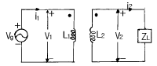
- V1i1=V2i2
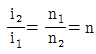
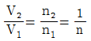
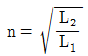
(정답률: 26%)
66. 3상 회로에 있어서 대칭분 전압이 V0=-8+j3[V],V1=6-j8[V],V2=8+j12[V]일때 a상의 전압[V]은?
- 6+j7
- 8+j12
- 6+j14
- 16+j4
(정답률: 39%)
67. 어떤 R-L-C 병렬회로가 병렬공진되었을 때 합성 전류는?
- 최대가 된다.
- 최소가 된다.
- 전류는 흐르지 않는다.
- 전류는 무한대가 된다.
(정답률: 22%)
68. 대칭 3상 회로가 있다. Y결선된 전원 한상의 전압의 순시값이 Va =√2 220sin ωt +√2 50sin (3ωt +30°)[V]일 때 상전압 및 선간전압의 실효값[V]은?(오류 신고가 접수된 문제입니다. 반드시 정답과 해설을 확인하시기 바랍니다.)
- 225.61, 390.77
- 225.61, 381.⑤
- 270, 467.65
- 270, 390.77
(정답률: 25%)
69. 다음과 같은 회로에서 L=50[mH], R=20[KΩ ]인 경우 회로의 시정수를 구하면 얼마인가?
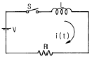
- 4.0 [μ sec]
- 3.5 [μ sec]
- 3.0 [μ sec]
- 2.5 [μ sec]
(정답률: 32%)
70. 전원과 부하가 다같이 Δ 결선된 3상 평형 회로가 있다. 전원 전압이 200[V], 부하 임피던스가 6+j8[Ω ]인 경우 선전류[A]는?
- 20
- 20/√3
- 20√3
- 10√3
(정답률: 18%)
71. 그림 ab간에 40[V]의 전압을 가할 때 10[A]의 전류가 흐른다. r1 및 r2 에 흐르는 전류비를 1:2로 하려면 r1 및 r2의 저항[Ω]은 각각 얼마인가?
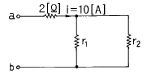
- r1 = 6, r2 = 3
- r1 = 3, r2 = 6
- r1 = 4, r2 = 2
- r1 = 2, r2 = 4
(정답률: 25%)
72. RC저역 필터회로의 전달함수 G(jω)는 ω =0일 때 얼마인가?
- 0
- 1
- 0.5
- 0.707
(정답률: 25%)
73. 9[Ω]과 3[Ω]의 저항 3개를 그림과 같이 연결 하였을 때 A,B 사이의 합성저항은 얼마인가?
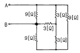
- 6[Ω]
- 4[Ω]
- 3[Ω]
- 2[Ω]
(정답률: 24%)
74. 파고율의 관계식이 바르게 표시된 것은?
- 최대값/실효값
- 실효값/최대값
- 평균값/실효값
- 실효값/평균값
(정답률: 18%)
75. 전달함수 C(s) = G(s)R(s)에서 입력함수를 단위 임펄스 즉 δ (t)로 가할때 계의 응답은?
- C(s)=G(s)δ(s)
- C(s)=G(s)/δ(s)
- C(s)=G(s)/s
- C(s)=G(s)
(정답률: 24%)
76. ℒ[sint]=1/S2+1을 이용하여 ①ℒ[sin at] 및 ②ℒ[cos ωt ]를 구하면?
- ① a/S+a, ② S/S+ω
- ① 1/S2-a2, ② 1/S2-ω2
- ① a/S2+a2, ② S/S2+ω2
- ① 1/S+a, ② 1/S-ω
(정답률: 19%)
77. 그림에서 a,b 단자에 200[V]를 가할때 저항 2[Ω]에 흐르는 전류 I1[A]는?
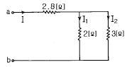
- 40
- 30
- 20
- 10
(정답률: 13%)
78. 그림과 같은 L형 회로의 4단자 ABCD 정수중 A는?
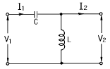
- 1+1/ωLC
- 1-1/ω2LC
- 1+1/jωL
- 1/2√LC
(정답률: 26%)
79. 그림과 같은 회로에서 저항 R[Ω ]과 정전용량 C[F]의 직렬 회로에서 잘못 표현된 것은?
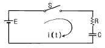
- 회로의 시정수는 τ =CR [초] 이다.
- t=0에서 직류전압 E[V]를 가했을때 t[초]후의 전류
 [A]이다.
[A]이다. - t=0에서 직류전압 E[V]를 가했을때 t[초]후의 전류
 [A]이다.
[A]이다. - R-C 직렬회로에서 직류전압 E[V]를 충전하는 경우 회로의 전압 방정식은
 이다.
이다.
(정답률: 24%)
80. f(t)=δ (t)-bε -bt 의 라플라스 변환은? (단, δ(t)는 임펄스 함수이다.)
- b/s+b
- s/s+b
- 1/s(s+b)
- s(1-b)+5/s(s+b)
(정답률: 23%)
5과목: 전기설비
81. 고압용 또는 특별고압용의 개폐기로 부하전류를 차단하기 위한 것이 아닌 개폐기는 부하전류가 있을 때 개로할 수 없도록 시설하여야 한다. 다만 부하전류의 유무를 확인할 수 있으면 그러하지 않아도 되는데 부하전류의 유무를 확인할 수 있는 조치나 장치로 볼 수 없는 것은?
- 부하전류 계측장치 및 전자유도장해 경감장치
- 터블렛 등을 사용함으로서 부하전류가 통하고 있을 때에 개로조작을 방지하기 위한 조치
- 개폐기를 조작하는 곳의 보기 쉬운 위치에 부하전류의 유무를 표시한 장치
- 전화기나 기타의 지령장치
(정답률: 16%)
82. 23kV 특별고압 전로와 저압 전로를 결합한 주상 변압기의 2차측 접지선의 굵기는 최저 몇 mm 인가? (단, 중성점 접지식 전선로임)
- 1.6
- 2.0
- 2.6
- 4.0
(정답률: 16%)
83. 저압 옥내 간선을 시설할 때 전동기 등의 정격전류의 합이 다른 전기사용 기계기구의 합보다 크고, 그 합계가 50A 이하일 때 다른 전기사용 기계기구의 정격전류의 합계에다가 전동기 등의 정격전류의 합계에 몇 배를 가한 다음 이 둘을 합한 값 이상의 허용전류가 있는 전선을 사용하여야 하는가?
- 1.1
- 1.25
- 1.5
- 2
(정답률: 38%)
84. 전력보안 통신설비는 가공 전선로로부터의 어떤 작용에 의하여 사람에게 위험을 주지 않도록 시설해야 하는가?
- 정전유도작용 또는 전자유도작용
- 표피작용 또는 부식작용
- 부식작용 또는 정전유도작용
- 전압강하작용 또는 전자유도작용
(정답률: 38%)
85. 특별고압전로와 비접지식 저압전로를 결합하는 변압기로서 그 특별고압 권선과 저압 권선간에 혼촉방지판이 있는 변압기에 접속하는 저압 옥상전선로의 전선으로 사용할 수 있는 것은?
- 케이블
- 절연전선
- 경동연선
- 강심알루미늄선
(정답률: 24%)
86. 전기욕기에 전기를 공급하기 위한 전원장치에 내장되어 있는 전원변압기의 2차측 전로의 사용전압은 몇 V 이하인 것을 사용하여야 하는가?
- 5
- 10
- 25
- 35
(정답률: 16%)
87. 고압 전선로의 지지물로서 길이 9m의 A종 철근콘크리트주를 시설할 때 땅에 묻히는 깊이는 몇 m 이상으로 하여야 하는가?
- 1.2
- 1.5
- 2
- 2.5
(정답률: 28%)
88. 가로등, 경기장, 공장, 아파트 단지 등의 일반조명을 위하여 시설하는 고압 방전등은 그 효율이 몇 lm/W 이상의 것이어야 하는가?
- 60
- 70
- 80
- 90
(정답률: 33%)
89. 직류식 전기철도에서 직류귀선은 귀선용 궤조와 궤조간 및 궤조의 바깥쪽 몇 cm 이내에 시설하는 부분 이외에는 대지로부터 절연하여야 하는가?
- 20
- 30
- 40
- 50
(정답률: 27%)
90. 송유풍냉식 특별고압용 변압기의 송풍기에 고장이 생긴 경우에 대비하여 시설하여야 하는 보호장치는?
- 경보장치
- 과전류측정장치
- 온도측정장치
- 속도조정장치
(정답률: 41%)
91. 풀용 수중조명등에 전기를 공급하기 위하여 사용하는 절연변압기의 2차측 전로의 접지에 대한 설명으로 옳은 것은?
- 제1종접지공사로 접지한다.
- 제2종접지공사로 접지한다.
- 제3종접지공사로 접지한다.
- 접지공사를 하지 않는다.
(정답률: 15%)
92. 가공 전선로의 지지물에 취급자가 오르고 내리는데 사용하는 발판못 등은 원칙적으로는 지표상 몇 m 미만에 시설 하여서는 아니 되는가?
- 1.2
- 1.5
- 1.8
- 2.0
(정답률: 26%)
93. 가반형의 용접전극을 사용하는 아크용접장치를 시설할 때 용접변압기의 1차측 전로의 대지전압은 몇 V 이하이어야 하는가?
- 200
- 250
- 300
- 600
(정답률: 35%)
94. 제어회로용 절연전선을 금속덕트공사에 의하여 시설하고자 한다. 금속덕트에 넣는 전선의 단면적은 덕트 내부 단면적의 몇 % 까지 넣을 수 있는가?
- 20
- 30
- 40
- 50
(정답률: 10%)
95. 직류귀선의 궤도 근접부분이 금속제 지중관로와 1km 안에 접근하는 경우, 금속제 지중관로에 대한 전식작용의 장해를 방지하기 위한 귀선의 시설방법으로 옳은 것은?
- 귀선은 정극성으로 할 것
- 귀선용 궤조의 이음매 저항을 합친 값은 그 구간의 궤조 자체의 저항의 30% 이하로 유지할 것
- 귀선용 궤조는 특수한 곳 이외에는 길이 50m 이상이 되도록 연속하여 용접할 것
- 귀선의 궤도 근접부분에 1년간의 평균전류가 통할 때에 생기는 전위차는 그 구간안의 어느 두 점사이에서 도 2V 이하일 것
(정답률: 22%)
96. 특별고압 전선로의 철탑의 가장 높은 곳에 220V용 항공 장애등을 설치하였다. 이 등기구의 금속제 외함은 몇 종접지공사를 하여야 하는가?
- 제1종
- 제2종
- 제3종
- 특별제3종
(정답률: 13%)
97. 사용전압 22900V의 가공전선이 철도를 횡단하는 경우 전선의 궤조면상 높이는 몇 m 이상이어야 하는가?
- 5
- 5.5
- 6
- 6.5
(정답률: 37%)
98. 고압 가공전선로의 경간은 지지물이 B종 철주로서 일반적인 경우에는 몇 m 이하인가?
- 200
- 250
- 300
- 350
(정답률: 30%)
99. 1수용장소의 인입선에서 분기하여 지지물을 거치지 않고 다른 수용장소의 인입구에 이르는 부분의 전선을 무엇이 라고 하는가?
- 가공인입선
- 지중인입선
- 연접인입선
- 옥측배선
(정답률: 35%)
100. 고압 가공 전선과 가공 약전류 전선이 접근하여 시설되는 경우 양자간의 수평 이격거리는 특별한 경우를 제외하고 몇 cm 이상이어야 하는가? (단, 전선은 케이블이 아니라고 한다.)
- 40
- 60
- 80
- 120
(정답률: 19%)